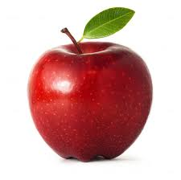

Welcome to Health and Nutrition Education Website

- Apples lower cholesterol. One medium-sized apple contains about four grams of fiber. Some of that is in the form of pectin, a type of soluble
fiber that has been linked to lower levels of LDL or "bad" cholesterol. That's because it blocks absorption of cholesterol, according to WebMD, which
helps the body to use it rather than store it.
- They keep you full. The wealth of fiber an apple provides keep you feeling full for longer without
costing you a lot of calories—there are about 95 in a medium-sized piece of fruit. That's because it takes
our bodies longer to digest complex fiber than more simple materials like sugar or refined grains. Anything
with at least three grams of fiber is a good source of the nutrient; most people should aim to get about 25 to 40 grams a day.
- Apples may keep you slim. One component of an apple's peel (which also has most of the fiber) is
something called ursolic acid, which was linked to a lower risk of obesity in a recent study in mice.
That's because it boosts calorie burn and increases muscle and brown fat, HuffPost UK reports.
- They can help breathing problems. Five or more apples a week (less than an apple a day!) has been
linked with better lung function, most likely because of an antioxidant called quercetin found in the skin of
apples (as well as in onions and tomatoes), the BBC reports. The breath benefits of apples extend even further:
A 2007 study found that women who eat plenty of the fruit are less likely to have children with asthma.
- Apples boost your immune system. While they don't quite rival oranges, apples are considered a good source of
immune system-boosting vitamin C, with over 8 milligrams per medium-sized fruit, which amounts to roughly 14 percent
of your daily recommended intake.
- Apples may fight cancer. In 2004, French research found that a chemical in apples helped prevent colon cancer,
WebMD reported. And in 2007, a study from Cornell University found additional compounds, called triterpenoids, which
seem to fight against liver, colon, and breast cancers.
- They decrease the risk of diabetes. A 2012 study published in the American Journal of Clinical Nutrition found
that apples, as well as pears and blueberries, were linked with a lower risk of developing type 2 diabetes because of
a class of antioxidants, anthocyanins, that are also responsible for red, purple, and blue colors in fruits and veggies.
- They're good for your brain. The fruit has been linked to an uptick in acetylcholine production, which communicates
between nerve cells, so apples may help your memory and lower your chances of developing Alzheimer's.